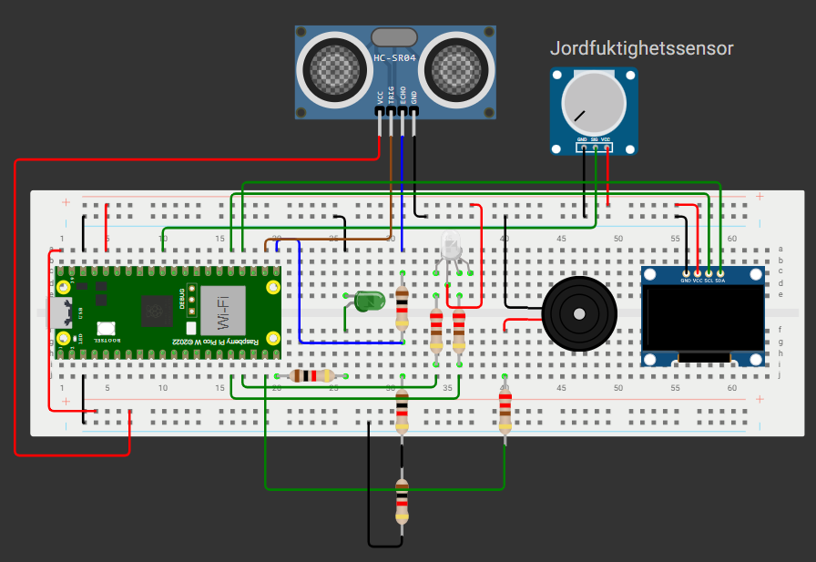
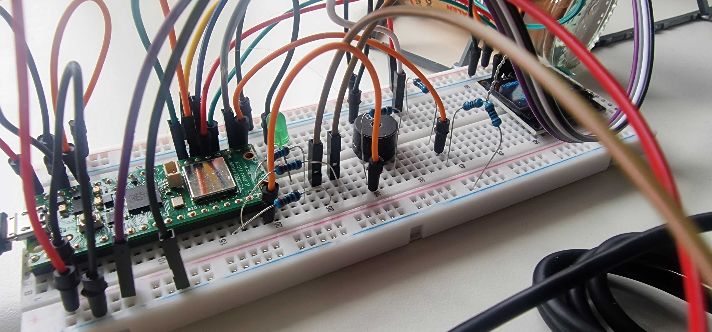
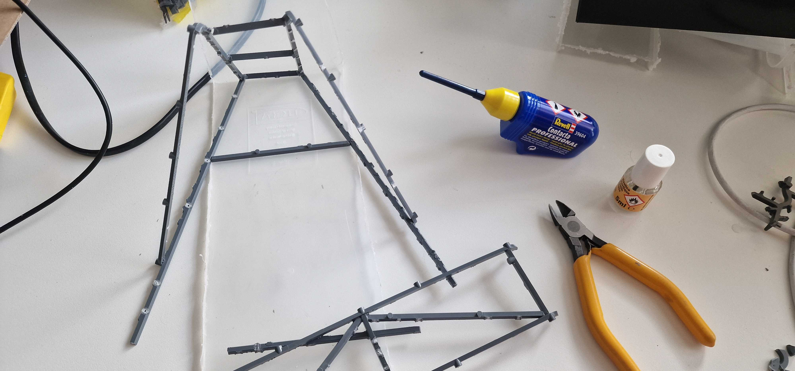
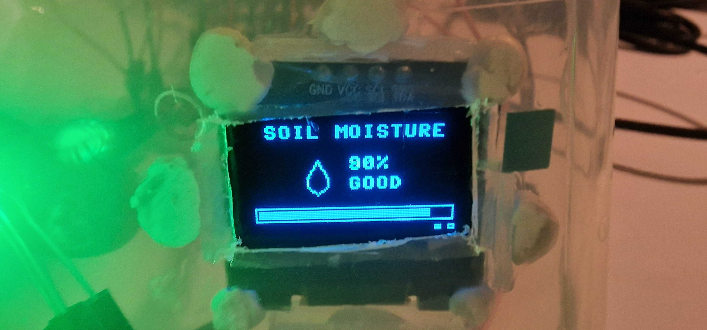
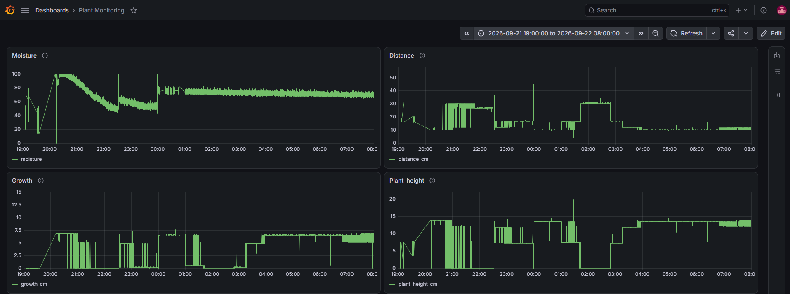
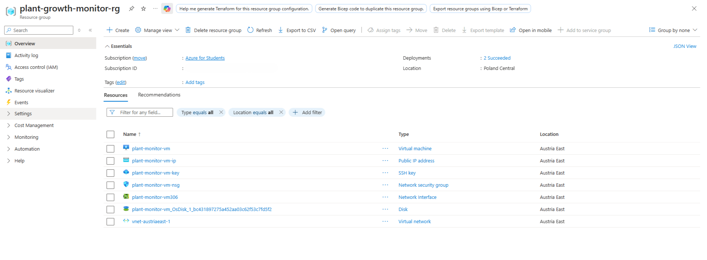

Plant Growth Monitor
Connecting measurements at the plant to a data pipeline - with local feedback, MQTT messaging and historical readings.
Deployed in Azure during the course. The cloud environment has since been shut down to avoid ongoing costs, so a live demo is not currently available.

The project
Built together with classmates, this prototype reads moisture and distance on a Raspberry Pi Pico, provides feedback through a display, LEDs and a buzzer, and publishes measurements to an MQTT broker. A Python consumer stores them in TimescaleDB for visualization in Grafana.
My contribution
My main responsibility was the physical prototype and the infrastructure around it. My teammates mainly built the containers and the foundations for the database, consumer and Grafana.
- Built and tested the physical hardware, including sensors and wiring, and calibrated and troubleshot the sensor readings.
- Created the Wokwi simulation selected by the team, including a working display, and built the mounting structure for the ultrasonic sensor.
- Set up the Azure server and virtual machine and worked on securing communication between the Mosquitto MQTT broker and the cloud environment.
- Adjusted and troubleshot the configuration to run all four containers together in Azure, and documented the physical build with photos.
What I learned
The work brought together physical sensor testing and cloud integration. Calibration, wiring and container configuration all needed attention to connect the prototype to the shared data pipeline.
What the team built
- MicroPython modules for moisture readings, ultrasonic distance and derived plant-height calculations.
- Local feedback through an OLED display, LED indicators and a dry-soil buzzer alert.
- Pico Wi-Fi/MQTT connection handling and publishing of sensor measurements.
- A Python MQTT consumer that writes timestamped readings to PostgreSQL/TimescaleDB.
- Docker Compose services for Mosquitto, the consumer, TimescaleDB and Grafana.
- Wokwi simulation files and a documented team workflow.
Project gallery
From simulation and physical assembly to local feedback, sensor history and the course deployment. Click any image to view it in full size.

The Wokwi circuit selected by the team, including sensors, display, LEDs and buzzer.
Open image ↗
The physical breadboard and sensor wiring during the build.
Open image ↗
The mounting structure built to position the ultrasonic sensor above the plant.
Open image ↗
The OLED display showing a soil-moisture reading during testing.
Open image ↗
Grafana shows moisture, distance and derived height and growth estimates. Changes also reflect calibration, placement and testing.
Open image ↗
The Azure resource group used during the course, including the virtual machine, network and related resources. The environment is now offline.
Open image ↗System at a glance
- Pico + sensorsMeasure moisture and distance
- Local feedbackOLED, LEDs and buzzer
- MQTT brokerTransport sensor measurements
- Python consumerParse messages and store readings
- TimescaleDBKeep timestamped measurements
- GrafanaVisualize historical sensor readings
Engineering decisions
Keep feedback close to the plant
The Pico shows current values and can alert locally, while the data pipeline supports later analysis. These are two distinct responsibilities.
Use messaging between edge and storage
MQTT separates publishing on the device from persistence in the Python consumer. Docker Compose brings the broker, consumer, database and Grafana together.
Treat height as an estimate
The code derives height from distance and fixed placement constants. Moisture is normalized using calibration values, so both measurements depend on the physical setup.
Scope & limitations
This is an edge-computing prototype, not a validated plant-care product or an ML classifier. Calibration and sensor placement affect the readings; distance noise can create apparent growth. The screenshots document sensor testing and a working Grafana dashboard during the course, but do not establish long-term plant-growth accuracy. Automated tests and reproducible dashboard provisioning remain areas for development. The physical prototype was built and tested, and the system ran in Azure during the course. That cloud environment is now offline.
Where it could go next
Longer sensor trials, message validation, distance outlier filtering, dashboard provisioning and documented calibration would strengthen the prototype.